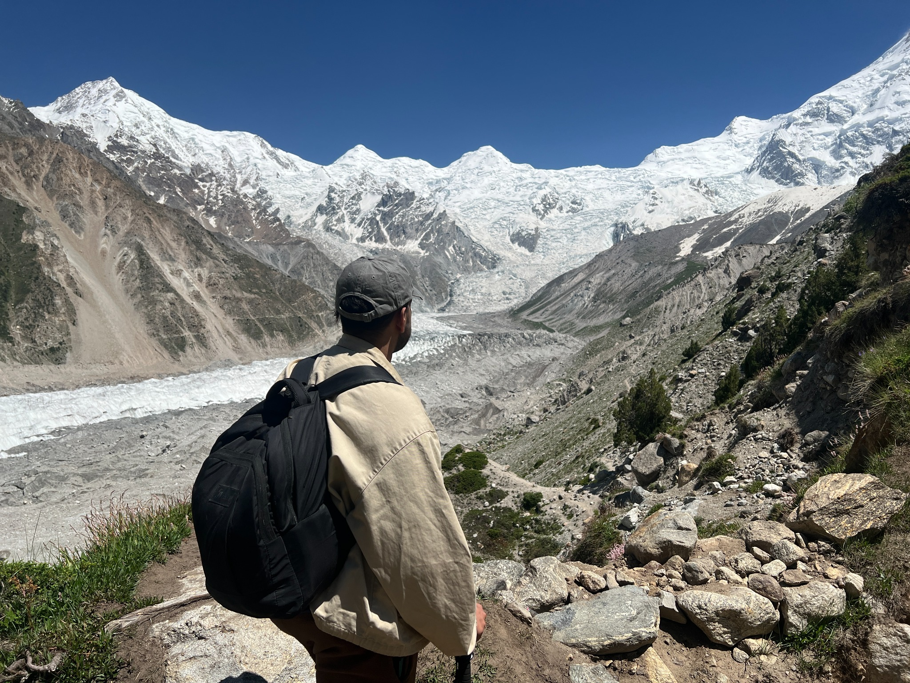
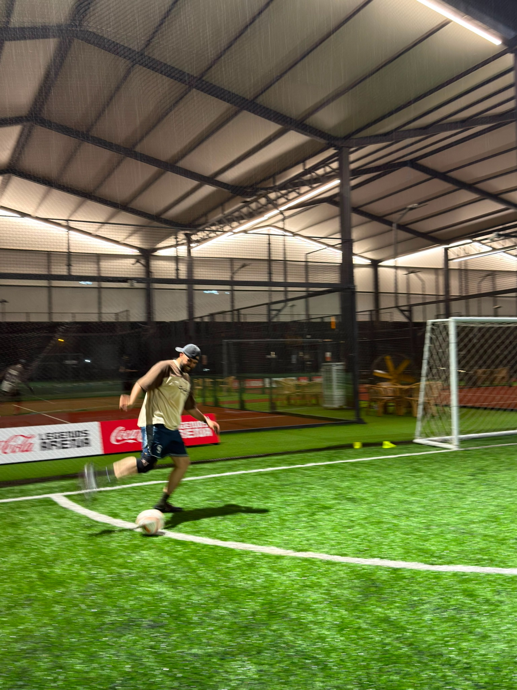

Who’s
Ibrahim?
Research analyst.
Sports fan. Chai person.
I’m Ibrahim Javed, a research and data analyst based in Lahore. My background is in Economics and Finance, and my projects bring together business research, analytics and automation.
I currently work at FreeWill on research, data quality and workflow testing. Before that, I analysed campaign performance at Revcloud and researched consumer markets at Healthy Herbals. I’m also studying MS Technology Management and Entrepreneurship at LUMS.
Outside work, I’m usually moving. I work out, swim, and play badminton and table tennis. Lately, I’ve joined the padel bandwagon too.
I play and watch football and cricket. A 2 a.m. kickoff is rarely a good enough reason to miss a match. I’ll happily spend the next day analysing the football tactics or picking apart a cricket match—the decisions, the momentum shifts and what I’d have done differently.
I’m almost always up for a hangout, especially if chai is involved. I also co-founded SloRush. Building a brand gives me a chance to put my interest in business into practice.
Travelling and trekking help me switch off; K2 Base Camp is on the list. Family and friends keep me grounded. I like being someone they can come to for a proper conversation—or a laugh.


What you can expect from me.
- Be thorough.
- I check where an answer came from and flag anything I can’t verify.
- Be useful.
- I build tools and document my work so other people can use it without starting from scratch.
- Be someone people can count on.
- I take responsibility for my work and make time to listen. A question or a different view is always welcome.
Education & continued learning
Education & continued learning
| Institution | Program | Status |
|---|---|---|
| LUMS | MS in Technology Management and Entrepreneurship | In progress |
| Lahore School of Economics | BS (Hons.), double major in Economics and Finance, GPA 3.51 / 4.00 | Graduated 2025 |
- GenAI-Powered Data Analytics Job Simulation, Forage and Tata
- Data Visualisation: Empowering Business with Effective Insights, Forage and Tata
- SQL Fundamentals for Data Analysts, Corporate Finance Institute
Experience
Where I’ve done the work
FreeWill
Research Analyst, Lahore
November 2025 to present
- Researched funders across 990s, 990-PFs, corporate and CSR, international, federal, and state sources, defining the data schema for AI-powered grant discovery.
- Ran investigative QA on AI crawlers with engineering, raising accuracy to 99%.
- Built curated funder lists for 28+ City Year cities that helped win a contract worth $195,000 a year.
- Published 1,500+ researched grant opportunities and built PRDs and dashboards guiding product decisions across CMS and Respond, two in-house AI platforms.
- Led a team of 3 and managed 100+ partners with tailored grant lists, supporting renewal of 20+ contracts.
Revcloud
Strategic Alliance Analyst, Lahore
July to November 2025
- Scaled SMS campaigns from a 10,000 to a 30,000 audience, growing leads from 100 to 3,000 a day.
- Designed a daily-refreshing Looker dashboard tracking CVR, RPL, and RPC by account, landing page, creative, and audience, with ROAS moving from 5x to 7x.
Healthy Herbals
Research Analyst, Lahore
2025
- Researched whey protein, lozenges, Korean ginseng, and women’s hormonal supplements, covering demand, consumer behavior, and competitors.
- Built bottom-up and top-down market sizing models, validated with visits to 30+ pharmacies, and reviewed 10+ venture capital firms.
Majid Al Futtaim (Carrefour)
Youth Ambassador, Lahore
2025
- Analyzed how Pakistan’s tax regime affects Carrefour’s retail pricing across three customer categories.
- Recommended changes to tax handling and refunds that could improve tax efficiency by up to 15%.
State Bank of Pakistan
Intern, Banking Division
2024
- Validated 100+ government cheques for audit integrity and processed interbank settlements through NIFT.
- Researched blockchain applications across traditional, Islamic, and microfinance banking.